# install.packages('ggplot2')
library(ggplot2)
library(dplyr)
library(tidyr)Data visualization
Introduction
We already know how to extract useful information from data frames. Various statistics tell us a lot about the data. Nevertheless, values of mean, quantiles and standard deviations are inconvenient for understanding the whole picture.
We get the most information through our eyes, therefore the skill of presenting the data visually is on of the most powerful. By creating simple visualisations, you can make initial hypotheses and understand possible relationships between variables.
Libraries
Working data
Today we will work with iris dataset. It id already included in R by default.
This famous (Fisher’s or Anderson’s) iris data set gives the measurements in centimeters of the variables sepal length and width and petal length and width, respectively, for 50 flowers from each of 3 species of iris. The species are Iris setosa, versicolor, and virginica

# data(iris)
head(iris) Sepal.Length Sepal.Width Petal.Length Petal.Width Species
1 5.1 3.5 1.4 0.2 setosa
2 4.9 3.0 1.4 0.2 setosa
3 4.7 3.2 1.3 0.2 setosa
4 4.6 3.1 1.5 0.2 setosa
5 5.0 3.6 1.4 0.2 setosa
6 5.4 3.9 1.7 0.4 setosaAdding new factor
iris_df = iris
iris_df$Sepal.Length.Category = cut(x=iris_df$Sepal.Length,
breaks = c(4,6,8),
labels = c('short', 'long'))
iris_df %>% head() Sepal.Length Sepal.Width Petal.Length Petal.Width Species
1 5.1 3.5 1.4 0.2 setosa
2 4.9 3.0 1.4 0.2 setosa
3 4.7 3.2 1.3 0.2 setosa
4 4.6 3.1 1.5 0.2 setosa
5 5.0 3.6 1.4 0.2 setosa
6 5.4 3.9 1.7 0.4 setosa
Sepal.Length.Category
1 short
2 short
3 short
4 short
5 short
6 shortBasic Visualization
plot()
The simplest graph is a points, each having x and y coordinates
x = 1:10
y = seq(2,20,2) ^ 2
x [1] 1 2 3 4 5 6 7 8 9 10y [1] 4 16 36 64 100 144 196 256 324 400We consider that the x and y coordinates at the same positions in each of the vectors correspond to one particular point. So we have points (1,2), (2,4), (3,6) and etc.
seq(from_value, to_value, by_value)- returns a vector with values fromfrom_valuetoto_valuewith a stepby_value
Scatter plot
plot(x, y)Sepal.Length vs Sepal.Width
plot(iris_df$Sepal.Length, iris_df$Sepal.Width)
We can make this graph prettier
plot(iris_df$Sepal.Length, iris_df$Sepal.Width,
main = "Sepal.Length vs. Sepal.Width", # the title
xlab = "Sepal.Length", # Label of X-axis
ylab = "Sepal.Width", # Label of Y-axis
col = "blue", # color of plot
pch = 19, # type of dots - 19 corresponds to the painted (solid) points
cex = 1 # size of dots
) 
All plot() style parameters

All basic R graphical parameters

Adding lines
By default plot() shows scatter plot, but we can change this behavior
plot(x, y,type = 'l') plot(x, y,type = 'b', lwd = 3) # lwd = linewidth
plot(x, y, type = 'o')
Terrible plot
Line graphs should sometimes be avoided, because lines connect points in the order of their position in the vectors
x = c(10,5,9,6,8,7,2,1,4,3)
y = c(1:4, 6:8,5,10,9)
x [1] 10 5 9 6 8 7 2 1 4 3y [1] 1 2 3 4 6 7 8 5 10 9plot(x, y, type = "b", pch=19)
After sorting:
df = data.frame(x, y) %>% arrange(x)
plot(df$x, df$y,type = "b", pch=19)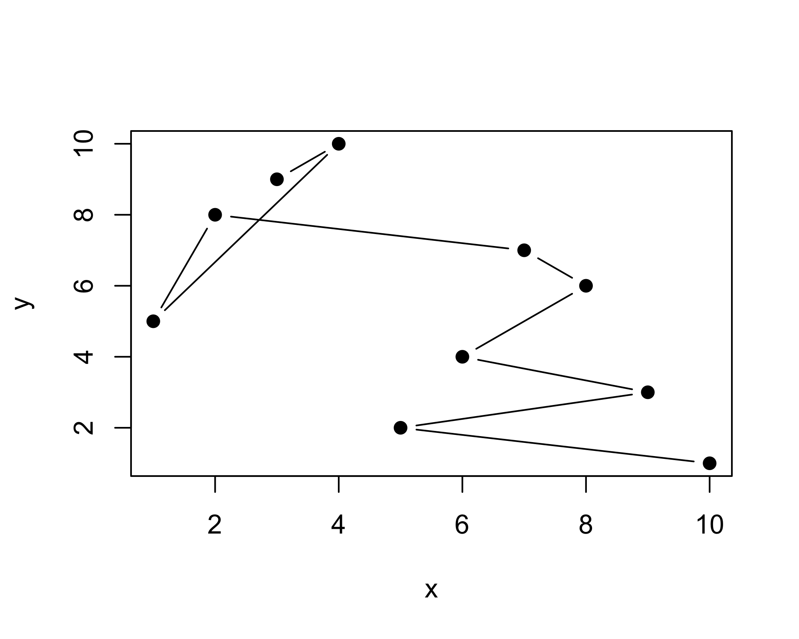
ggplot2 doesn’t have such problem
# basic r advanced
# indexes_to_sort = order(x)
# x_sorted = x[indexes_to_sort]
# y_sorted = y[indexes_to_sort]
# plot(x_sorted, y_sorted, type = "b", pch=19)NB! We can’t just sort one of the vectors because we must save the correspondence of x and y coordinates between two vectors.
Bar Plots
heights = c(Roman = 190,
Ann = 172,
Charlie = 121,
Vlad = 183,
Sasha = 180) # named vector
heights Roman Ann Charlie Vlad Sasha
190 172 121 183 180 heights = heights %>% sort(decreasing = T)
barplot(heights)
We can customize this graph
barplot(heights,
main = "Heights of people", # the title
xlab = "Height", # Label of X-axis
ylab = "Name", # Label of Y-axis
col = "lightblue", # color of inner part of bars
border = "blue", # color of borders
horiz = TRUE, # make barplot horizontal
xlim = c(0,200) # limits of values showd on x-axis
)
Number of iris_df species
number_of_species = table(iris_df$Species)
barplot(number_of_species,
col = 'violet')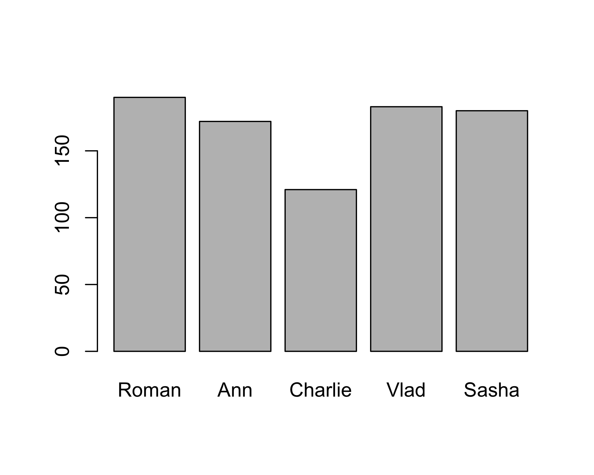
Now we see that our data “is balanced”
Histograms
Distribution of Sepal.Length
hist(iris_df$Sepal.Length, # only x-axis!
main = "Sepal.Length distribution",
xlab = "Sepal.length",
col = "lightgreen",
breaks = 8 # number of x-axis splits for frequency calculation in each of the resulting ranges
)
Each bar represents frequency of this particular Sepal.Length in dataset.
For example, first bar have height of 5 - it mean, that there are 5 flowers with Sepal.Length between 4 and 4.5.
We can make bars two times thinner
hist(iris_df$Sepal.Length,
main = "Sepal.Length distribution",
xlab = "Sepal.length",
col = "lightgreen",
breaks = 16) # <---- changed
Boxplots
Boxplots are very informative charts. They display similar but more information than a histogram.
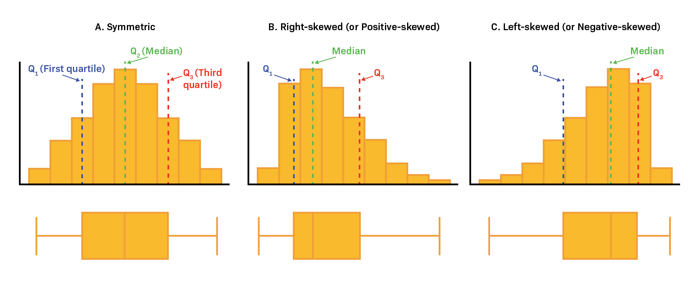
boxplot(iris_df$Sepal.Length,
# main = "Sepal.Length",
ylab = "",
xlab = "Sepal.Length",
col = "darkviolet",
horizontal = T)
Grouped boxplots
boxplot(iris_df$Sepal.Length ~ iris_df$Species,
main = "Sepal.Length",
xlab = "Species",
ylab = "Sepal.Length",
col = "darkviolet",
horizontal = F)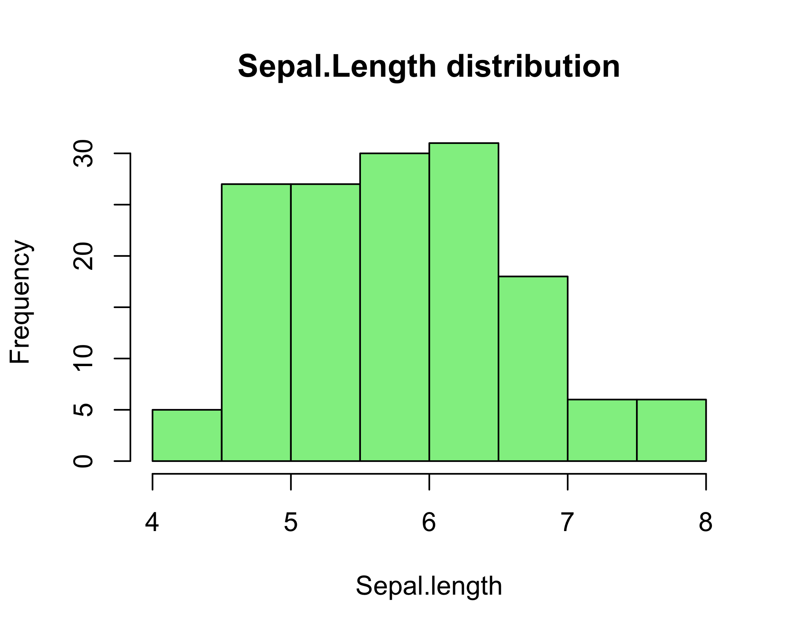
Boxplot is good for unimodal similar to normaldistributions, as it doesn’t show two peaks

ggplot
ggplot2 is the most popular package for charts creations.
Philosophy
The ggplot is based on 3 things: data, aesthetics and geoms (geomertries)
Inside the geoms there are aesthetics.
Inside the aesthetics we put the variables from the data that we want to see in the plot. These will be our axes.
An axis is not just an x and y coordinate - any aesthetic, such as a fill,color,size etc. can also be an (pseudo)axis.
Each component in the graphic is added layer by layer

Intro
ggplot(data=iris_df, # data
mapping = aes(x=Sepal.Length, y=Sepal.Width)) + #aesthetics (axes)
geom_point() # geom
Obligatory components to create chart:
ggplot(data=iris_df)- data:data.frame,tibble…ggplot(..., mappings=aes(x=Sepal.Length, y=Sepal.Width))- aesthetics, which turned into x and y axis.+ geom_point()- geom, at least one.
Storing plots in variables
p = ggplot(data=iris_df, mapping = aes(x=Sepal.Length, y=Sepal.Width)) + geom_point()
p
Adding new aesthetics (“axes”)
Adding right to the ggplot()
ggplot(data=iris_df,
mapping = aes(x=Sepal.Length,
y=Sepal.Width,
color=Species,
size = Petal.Width,
shape=Sepal.Length.Category)) +
geom_point() 
Adding to variable
p + aes(color=Species, size = Petal.Width,
shape=Sepal.Length.Category)
Aesthetics list
color- colorfill- filling colorsize- sizeshape- shape of pointsstroke- stroke thicknessalpha- transparencyother specific for geoms aesthetics…
Geoms
Geometries define the types of graphs in the diagram.
Geoms have specific variables
iris_df %>%
ggplot(aes(x=Sepal.Width)) + # <--- here
geom_histogram(bins = 20, fill='lightblue', col='black')
Aesthetics can also be set up within the geoms
aesthetics inside
ggplot()are set for all geomsaesthetics inside
geom_..()functions are set only for this geom
iris_df %>%
ggplot() +
geom_histogram(aes(x=Sepal.Width),
bins = 20, fill='lightblue', col='black') # <--- here
Adding several geoms
iris_df %>%
ggplot(aes(x=Species, y=Sepal.Length)) +
geom_boxplot(aes(fill=Species), outliers = F) +
geom_jitter(width=0.1)
Variables and aesthetics
As you have seen,
fill,color,size,shape,strokeandalphacan be seen outside ofaes(). They can also be set to a specific fixed value.Each geom has a certain set of parameters. In
aes()there are mandatory and optional parameters, and outside it there are only optional parameters
Inside the aes()
iris_df %>%
ggplot(aes(x=Sepal.Length, y=Sepal.Width)) +
geom_point(aes(color=Species)) # <--- here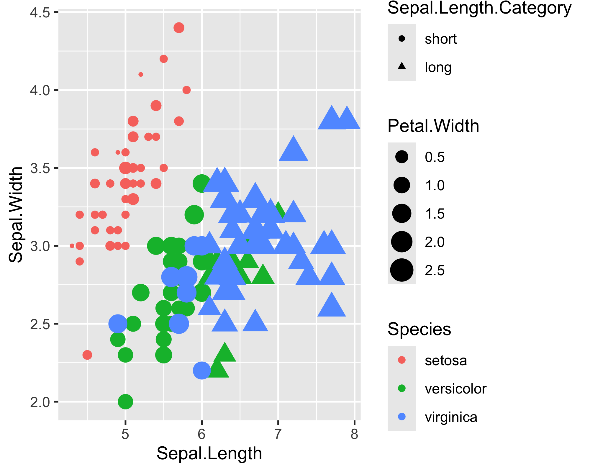
Outside the aes()
ggplot(data=iris_df,
mapping = aes(x=Sepal.Length, y=Sepal.Width)) +
geom_point(color='blue') # <--- here
Geoms can take different data!
iris_df %>%
ggplot(aes(x=Sepal.Length, y=Sepal.Width)) +
geom_point(data=iris_df %>% filter(Sepal.Width > 3), # data (filtered iris)
aes(color=Species)) +
geom_hex(data=iris_df %>% filter(Sepal.Width < 3)) # another data (filtered iris)
Themes
Built-in themes
p + theme_bw()
p + theme_classic()
p + theme_void()
Custom themes (Advanced)
p = p + theme(axis.text = element_text(size = 15),
axis.title = element_text(size = 20),
panel.background = element_rect(fill = 'white', color='black'))
p
Labels
p + labs(x='Sepal length',
y='Sepal width',
color = 'Iris species',
# fill =
# size =
# shape =
# stroke =
title = 'Scatter plot',
subtitle = 'Subtitle',
caption = 'It is the great plot',
tag = 'A')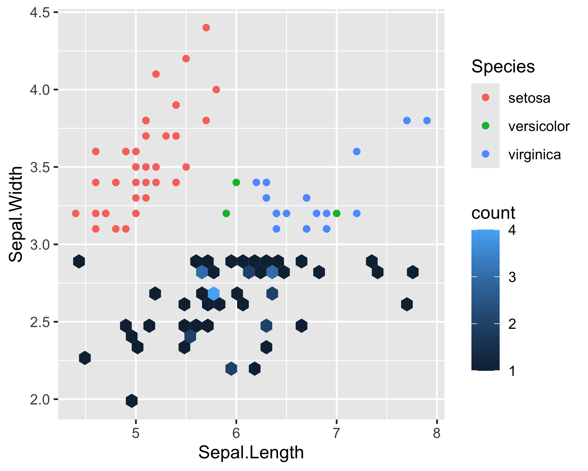
Simple functions for labeling axes: + xlab() and + ylab()
Let’s draw!
Scatter plot
iris_df %>% ggplot(aes(x=Petal.Length, y=Petal.Width)) +
geom_point() + theme_classic()
Histogram
iris_df %>% ggplot(aes(x=Petal.Length)) +
geom_histogram(color='blue', fill='lightblue') +
theme_classic()`stat_bin()` using `bins = 30`. Pick better value with `binwidth`.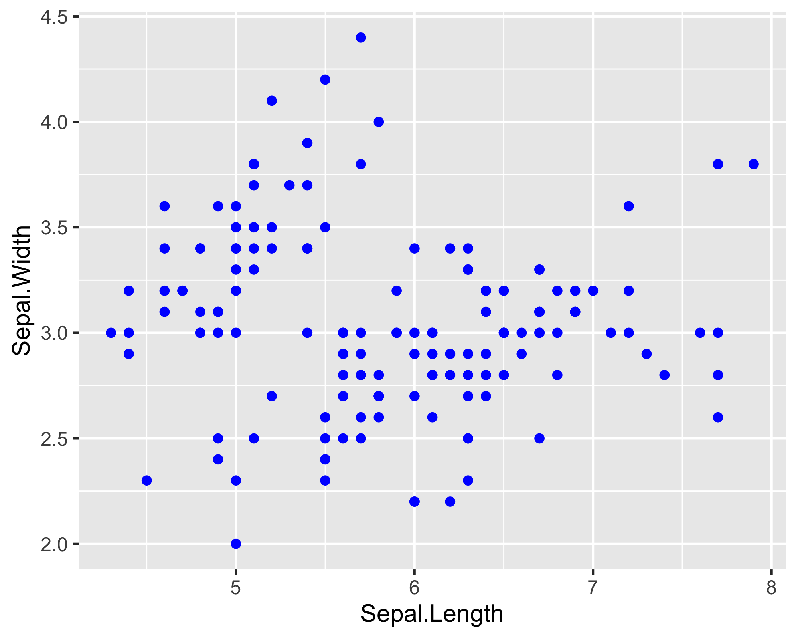
Density plot
iris_df %>% ggplot(aes(x=Petal.Width, fill=Species)) +
geom_density(alpha=0.8) + theme_classic()
Boxplot
iris_df %>% ggplot(aes(x=Petal.Width, y=Species, fill=Species)) +
geom_boxplot() + theme_classic() + theme(legend.position = "none")Yes, we can combine custom and built-in themes in one plot
Deleting the legend (as it duplicates color information)
+ theme(legend.position = "none")
Barplots
sepal_len_stats = iris_df %>% group_by(Species) %>%
summarise(mean_sepal_len = mean(Sepal.Length),
sd_sepal_length = sd(Sepal.Length))
sepal_len_stats# A tibble: 3 × 3
Species mean_sepal_len sd_sepal_length
<fct> <dbl> <dbl>
1 setosa 5.01 0.352
2 versicolor 5.94 0.516
3 virginica 6.59 0.636geom_col - if heights of bars are known (continuous data)
p_col = sepal_len_stats %>%
ggplot(aes(x=Species, y=mean_sepal_len, fill=Species)) +
geom_col() + theme_classic() + theme(legend.position = "none")
p_col
Adding geom_errorbar (SD)
p_col + geom_errorbar(aes(ymin=mean_sepal_len-sd_sepal_length,
ymax=mean_sepal_len+sd_sepal_length),
width=0.3)
Three different types of values are commonly used for error bars, sometimes without even specifying which one is used.
Standard deviation
Standard error
Confidence interval
We will discuss each later
geom_bar - if heights are unknown (counting categorical data)
iris_df %>% ggplot(aes(x=Sepal.Length.Category,
fill=Sepal.Length.Category)) +
geom_bar() + theme_bw() + theme(legend.position = "none")
position="stack" (by default)
iris_df %>% ggplot(aes(x=Sepal.Length.Category, fill=Species)) +
geom_bar() + theme_bw() 
position="fill" - scaled from 0 to 1
iris_df %>% ggplot(aes(fill=Species, x=Sepal.Length.Category)) +
geom_bar(position = 'fill') + theme_bw()
position="dodge"
iris_df %>% ggplot(aes(fill=Species, x=Sepal.Length.Category)) +
geom_bar(position = 'dodge') + theme_bw()
Something big and difficult
ggplot(iris, aes(x = Species, y = Sepal.Length)) +
geom_violin(aes(fill = Species), alpha = 0.4) + # Violin plots
geom_boxplot(fill = "lightgray", alpha = 0.6, outliers = F, width=0.2) +
geom_jitter(aes(fill = Species), width = 0.2, alpha = 0.5, shape=21, col='black') +
geom_hline(aes(yintercept = mean(Sepal.Length)), col='red', linewidth=1, lty=2) +
geom_text(aes(label='Global mean', x = 'setosa', y=mean(Sepal.Length)+0.1), col='red') +
labs(title = "Boxplot of Sepal Length by Species with Jittered Points",
x = "Species",
y = "Sepal Length (cm)") +
theme_minimal()
New geoms used
geom_violinplot()- Violin plotgeom_hline()- horizontal linegeom_text()- just text
Saving the plot
To save last drawn plot:
ggsave(
filename = './lec_output/bigplot.png', # specify the filename (path to file)
device = , # png, pdf, jpeg, svg and others
dpi = 320, # resolution
width = 1800,
height = 1600,
units = "px" #in, cm, mm
)Warning in geom_text(aes(label = "Global mean", x = "setosa", y = mean(Sepal.Length) + : All aesthetics have length 1, but the data has 150 rows.
ℹ Please consider using `annotate()` or provide this layer with data containing
a single row.Save “everything between”
pdf("./lec_output/dodge_barplot.pdf", width = 6, height = 6)
iris_df %>% ggplot(aes(fill=Species, x=Sepal.Length.Category)) +
geom_bar(position = 'dodge')
dev.off()quartz_off_screen
2 This structure allow save into pdf all graphical outputs that between pdf() and dev.off()
ggpubr (Advanced)
# install.packages('ggpubr')
library(ggpubr)Barplot
iris_df %>% ggbarplot(x="Species", y="Sepal.Width",
fill='Species',
add = "mean_sd" # calculate mean and sd
)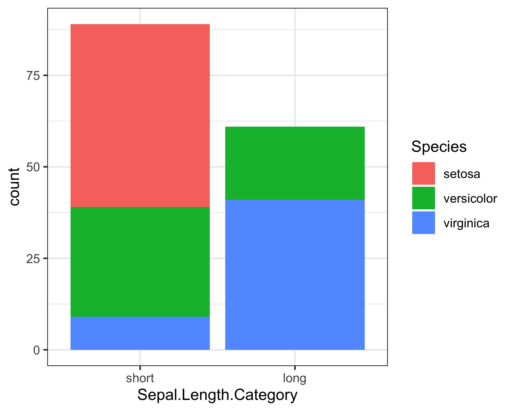
Boxplot
Statisctics inside!
p_pubr = iris_df %>% ggboxplot(x='Species', y='Sepal.Length', col='Species')
comparisons <- list( c("setosa", "versicolor"),
c("setosa", "virginica"),
c("virginica", "versicolor") )
p_pubr + stat_compare_means(comparisons = comparisons,
label = "p.signif")+
stat_compare_means(label.y = 10)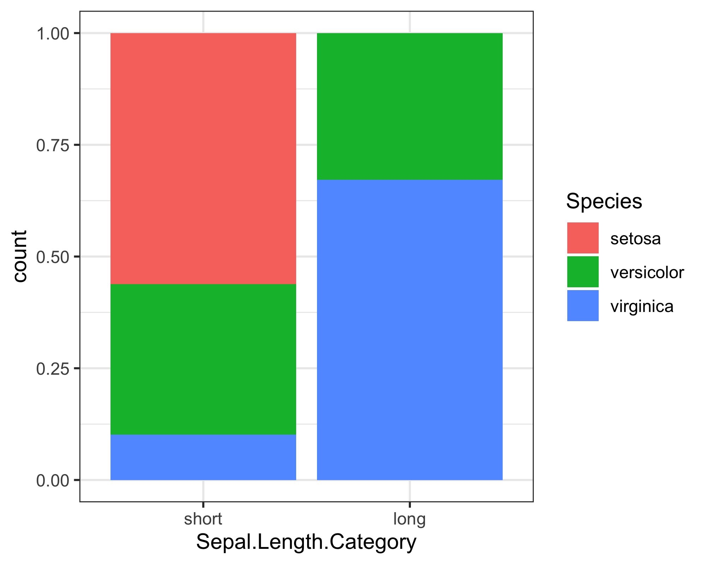
See more about ggpubr HERE
P.S
Customizing fill - scale_fill_manual()
# Advanced -------
iris_df %>% ggplot(aes(x=Species, y=Sepal.Length)) +
stat_summary(aes(fill=Species), geom = 'bar', fun = mean) +
geom_jitter(aes(fill=Species), shape=21, width = 0.1,
stroke=0.5, col='black') +
theme_bw() +
labs(title = 'Barplots with jitter') +
# ----------
scale_fill_manual(
values=c("#e63946", "#ffba49", "#457b9d"),
labels=c('Setosa sp.', 'Versicolor sp.', 'Virginica sp.'),
)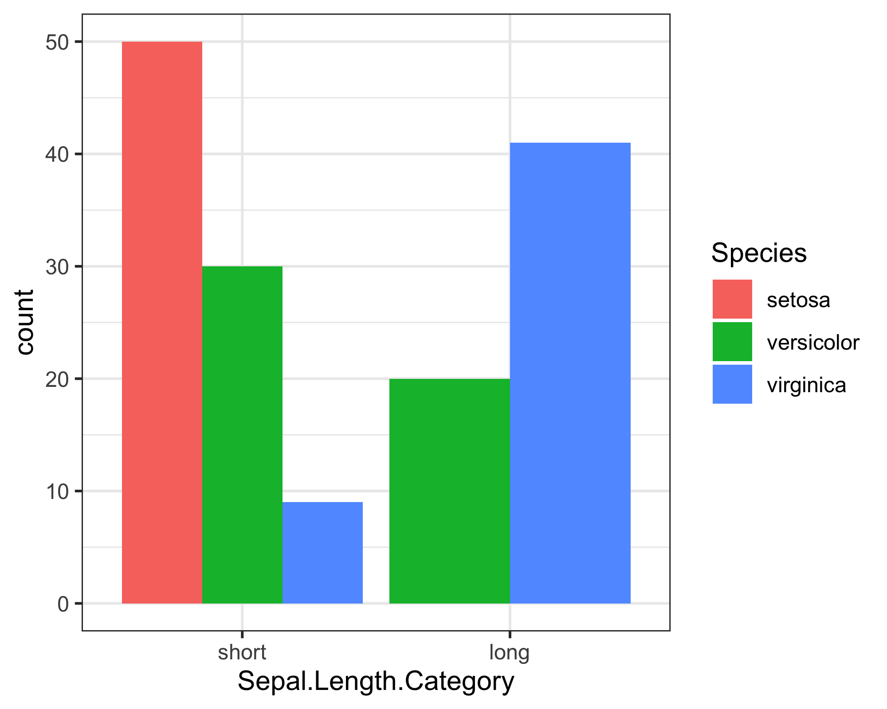
Customizing color - scale_color_manual()
iris_df %>% ggplot(aes(x=Sepal.Length, y=Sepal.Width, col=Species)) +
geom_point(alpha=0.6, size=4) +
theme_classic() +
scale_color_manual(
values=c("#e63946", "#ffba49", "#457b9d"),
labels=c('Setosa sp.', 'Versicolor sp.', 'Virginica sp.'),
)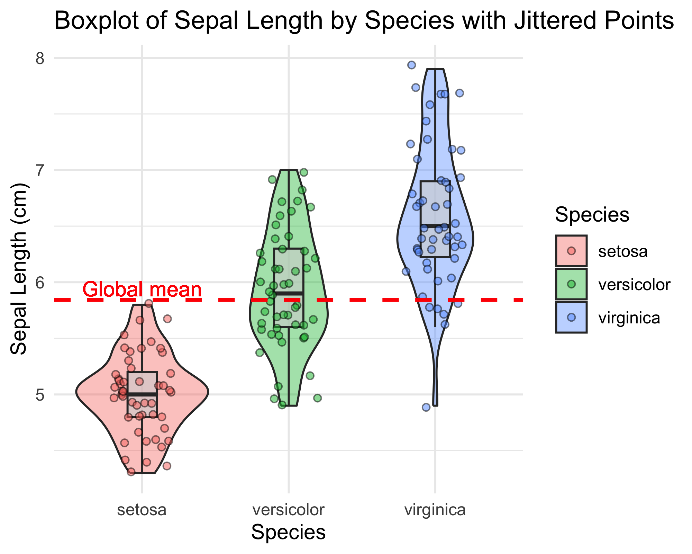
Facets
facet_wrap()
iris_df %>% ggplot(aes(x=Petal.Length, y=Petal.Width)) +
geom_point(alpha=0.6, size=2) +
theme_bw() +
# ----------------------
facet_wrap(. ~ Species)
facet_grid()
iris_df %>% ggplot(aes(x=Petal.Length, y=Petal.Width)) +
geom_point(alpha=0.6, size=2) +
theme_bw() +
# ----------------------
facet_grid(cols = vars(Species),
rows=vars(Sepal.Length.Category))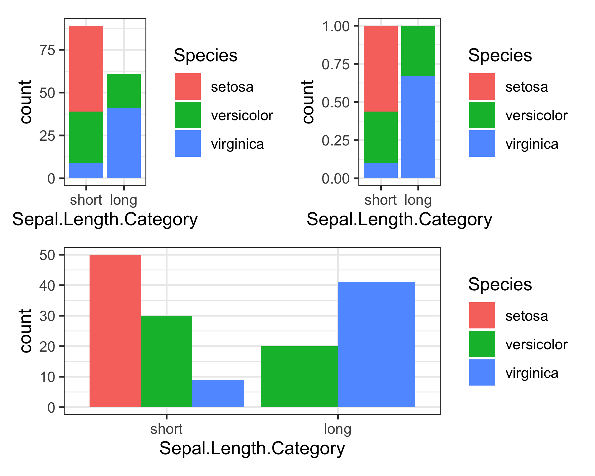
# facet_wrap(Sepal.Length.Category ~ Species)